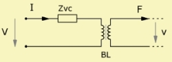
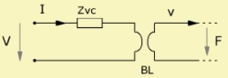
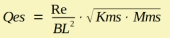

LE Electro Dynamic Motor Parameters
| Home | LE-Part |
 |
 |
 |
The parameters of the lumped element model of the electro dynamic motor are:
Re
Re is part of the voice coil impedance Zvc. Its value is measured at DC (direct current). For loudspeakers a typical value for Re would be in the range between 2 Ω ... 15 Ω
The resistance of Zvc is only constant at low frequencies. At high frequencies Re increases with frequency. Parameters for controlling the frequency dependency can be specified at Voice Coil Parameters, VC.
BL
BL is called "Force Factor" or "Transducer Constant" as explained in chapter Electro Dynamic Model. BL is the product of the magnetic flux density B and the effective length of the wire which is at any time within the gap of the magnet. The unit of [BL] = T·m or [BL] = N/A.
Qes
Qes is defined to be the electrical quality factor of the
resonance of the Fundamental Frequency, fs.
Qes is a technical parameter from which we can easily predict the
behavior of the response curves as discussed in chapter
Total Quality Factor, Qts.
BL2/Re can be regarded as the mechanical equivalent damping resistance:

Formula
The name of the parameters are equal to the formula-identifiers:
|
|